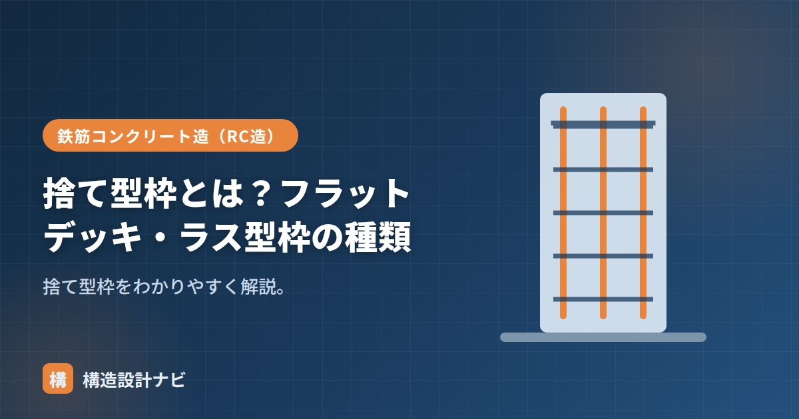

捨て型枠とは？フラットデッキ・ラス型枠の種類

捨て型枠（すてかたわく）とは、コンクリートが固まった後も取り外さず、そのまま残す型枠のことです。埋設型枠（まいせつかたわく）とも呼ばれ、英語では stay-in-place formwork と表現されます。鋼製やメタルラス製のものが多く、支保工の削減や工期短縮を目的に、床（スラブ）や基礎などで幅広く使われています。
- 捨て型枠は解体せずコンクリートと一体に残す型枠
- フラットデッキ・デッキプレート・ラス型枠などの種類がある
- 脱型不要で工期短縮になる一方、防錆・仕上げとの取り合いに配慮が必要
意味と通常の型枠との違い
通常の型枠は、コンクリートが所定の強度に達した段階で解体・撤去しますが、捨て型枠は解体せずコンクリートと一体化させたまま残します。脱型の手間や仮設材の回収作業が省け、狭くて解体作業がしにくい場所や、支保工を組みにくい高所の床工事などでも施工性が向上します。一方で、残置される分、材料費そのものは通常の型枠より高くなる傾向があります。
種類
| 種類 | 内容・用途 |
|---|---|
| フラットデッキ | 床（スラブ）用の薄い鋼製デッキ。平滑な下面を得やすく支保工を減らせる床型枠 |
| デッキプレート | 波形の鋼板。床・屋根の型枠兼用で、断面性能を高めた合成スラブにも使われる |
| ラス型枠 | リブラス・エキスパンドメタル製の網状の型枠。打ち継ぎ部や基礎の仕切りに |
基礎・スラブへの使い方
- スラブ：フラットデッキやデッキプレートを梁の間に渡して敷き込み、その上に配筋・打設する。下面の型枠と支保工を大幅に省ける。
- 基礎・打ち継ぎ：ラス型枠を仕切りとして使い、後から打つコンクリートとの打ち継ぎ面をつくる。網目からモルタルが多少浸み出すため、レイタンス（脆弱層）が少ない良好な打ち継ぎ面が得られやすい。
メリットと注意点
捨て型枠は脱型不要で工期短縮・省力化になり、支保工が減ることで下階の作業スペースも確保しやすくなります。反面、鋼製のものは残置後の防錆処理・耐久性や、仕上げ材との取り合い、遮音・断熱性能への影響に配慮する必要があります。設計・施工計画の段階で、使用箇所と仕様を検討しておくことが大切です。
フラットデッキを採用した現場で、断熱・遮音の仕様検討が後回しになり、後から天井裏で追加対策を組んだ経験がある。工期短縮のメリットだけに目を向けず、仕上げ・設備との取り合いを計画段階で確認しておくことが欠かせないと感じている。
通常の型枠との違い（図解）
捨て型枠の最大の特徴は「解体しない」ことです。工程の違いを比べると、なぜ工期短縮になるのかがわかります。
フラットデッキの施工の流れ
スラブでもっとも多く使われるフラットデッキを例に、実際の施工手順を見てみましょう。
- 梁の施工：先行して梁（鉄骨またはRC）を組み立てる。
- デッキの敷設：梁の間にフラットデッキを渡して並べる。両端は梁に一定の長さを掛ける（掛かり代の確保が重要）。
- 端部の処理：デッキ端部を溶接や専用金物で固定し、打設時にずれないようにする。
- 配筋：デッキの上にスラブ筋を配置する。
- 打設・養生：コンクリートを打ち込む。デッキがそのまま型枠となるので、下からの支保工は原則不要。
フラットデッキは打設時のコンクリート重量に自力で耐えることが前提です。そのため、スパン・板厚・積載条件に応じた製品選定が欠かせません。想定外に厚いスラブを打つ場合や、打設時に人や機材が集中する場合は、部分的に支保工（サポート）を入れることもあります。
よくある質問
Q1. 捨て型枠のコストは通常の型枠より高いのですか？
材料費だけを比べると、残置される分だけ捨て型枠のほうが高くなります。ただし総合的なコストでは逆転することがあります。脱型・支保工解体の労務費が不要になり、支保工のレンタル期間も短縮できるためです。また工期が短くなることによる現場経費の削減効果も大きく、特に階数の多い建物ほど有利になります。
Q2. フラットデッキを使えば支保工は完全に不要ですか？
多くの場合は不要ですが、条件によっては必要になります。デッキは自身の剛性で打設時の重量を支えますが、スパンが長い場合やスラブ厚が大きい場合は、たわみが過大になるため中間にサポートを立てます。製品ごとに「無支保工で施工できるスパンとスラブ厚の組み合わせ」が定められているので、それを確認して計画します。
Q3. ラス型枠はどんな場面で使いますか？
コンクリートの打ち継ぎ部の仕切りや、基礎の一部など、型枠を撤去しにくい場所で使われます。網目状のためモルタル分が少し染み出しますが、その分だけ表面のレイタンス（脆弱な層）が少なくなり、後から打つコンクリートとの一体性が高まる利点があります。地中に残る部分など、撤去する意味がない箇所にも適しています。
まとめ
- 捨て型枠は取り外さず残す型枠（埋設型枠）。脱型の手間を省ける。
- フラットデッキ・デッキプレート・ラス型枠などがある。
- スラブの床型枠や基礎・打ち継ぎ部に使い、工期短縮になる。
- 残置される分、防錆や仕上げとの取り合いへの配慮が必要。